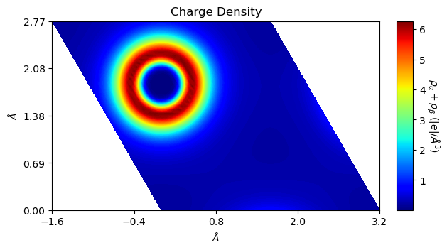
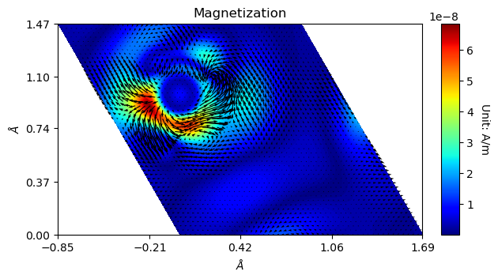
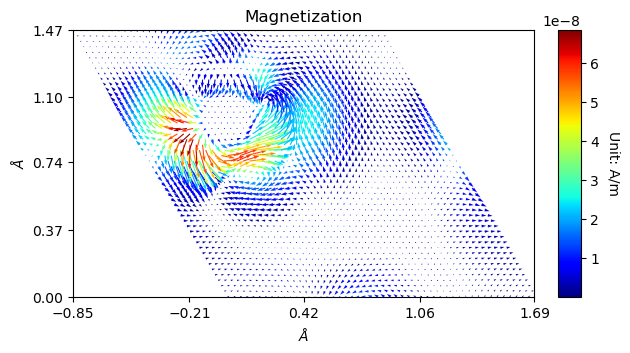
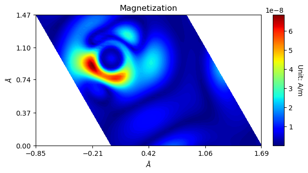
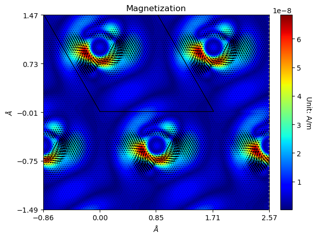
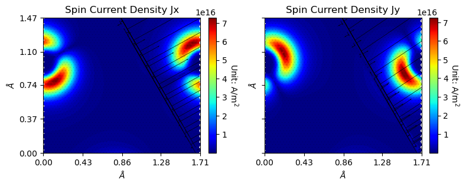
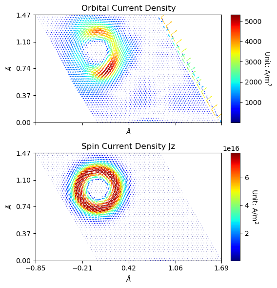

Relativistics (2c-SCF)
Here code examples for properties output from scalar-relativistic (SR) and spin-orbit coupling (SOC) calculations are given. In the following text, these calculations are referred to as 2c-SCF.
NOTE
So far due to the efficiency concerns, only 2D densities are available. Developers are working actively to address the 3D plotting issues.
The ‘read_relativistics’ method
This method is defined in the crystal_io.Properties_output class, which read formatted output files generated by CRYSTAL and return to classes defined in the relativistics module (see below). The object is also accessible by calling the <type> attribute of the Properties_output object.
The standard output and data type is required to identify the sequence and range of 2D vector fields in the fort.25 file. Otherwise the user must explicitly specify index which starts from 0.
[1]:
from CRYSTALpytools.crystal_io import Properties_output
obj = Properties_output('relt_WSe2.out')
obj.read_relativistics('relt_WSe2.f25', type='SPICURDENS')
print('Type: {}'.format(type(obj.SPICURDENS)))
print('Base vectors (point A, B, C):')
print(obj.SPICURDENS.base)
print('Jx dimensionality:')
print(obj.SPICURDENS.data_x.shape)
Type: <class 'CRYSTALpytools.relativistics.SpinCurrentDensity'>
Base vectors (point A, B, C):
[[ 0. 1.72622369 0. ]
[ 0. 0. 0. ]
[ 1.49495208 -0.8631092 0. ]]
Jx dimensionality:
(50, 50, 3)
With the same object and file, get magnetization.
[2]:
obj.read_relativistics('relt_WSe2.f25', type='MAGNETIZ')
print('Type: {}'.format(type(obj.MAGNETIZ)))
print('Base vectors (point A, B, C):')
print(obj.MAGNETIZ.base)
print('Data dimensionality:')
print(obj.MAGNETIZ.data.shape)
Type: <class 'CRYSTALpytools.relativistics.Magnetization'>
Base vectors (point A, B, C):
[[ 0. 1.72622369 0. ]
[ 0. 0. 0. ]
[ 1.49495208 -0.8631092 0. ]]
Data dimensionality:
(50, 50, 3)
The ‘relativistics’ module
So far the relativistics module is mainly developed for 2D plotting proposes.
The ‘ChargeDensity’ class
The ChargeDensity class is the same as the electronics.ChargeDensity class, with the spin dimension equals to 1. Only the from_file classmethod is redefined. Output is mandatory.
Instantiate the object and plot charge density.
[3]:
from CRYSTALpytools.relativistics import ChargeDensity
obj = ChargeDensity.from_file('relt_WSe2.f25', 'relt_WSe2.out')
print('Type: {}'.format(type(obj)))
fig = obj.plot_2D(option='charge')
Type: <class 'CRYSTALpytools.relativistics.ChargeDensity'>

The ‘VectorField’-based classes
The VectorField class is the basic class for vector fields obtained by 2c-SCF. Depending on the specific properties, child classes are generated, which shares similar methods:
Magnetization, OrbitalCurrentDensity and SpinCurrentDensity.
All the classes are aimed to be independent of dimensionality, but currently only 2D data has been implemented.
Express plotting of magnetization field of WSe2 on W atom plane.
[4]:
from CRYSTALpytools.relativistics import Magnetization
fig = Magnetization.from_file('relt_WSe2.f25', 'relt_WSe2.out').plot_2D()

The color-filled contours represent the length of vectors in 3D space. The quiver plot marks the projection of these vectors on the plane.
Similarly, a color-coded quiver plot can be obtained.
[5]:
from CRYSTALpytools.relativistics import Magnetization
fig = Magnetization.from_file('relt_WSe2.f25', 'relt_WSe2.out').plot_2D(
quiverplot=True, colorplot=False
)

With quiverplot=False and colorplot=True, the scalar field of vector norms can be obtained.
[6]:
from CRYSTALpytools.relativistics import Magnetization
fig = Magnetization.from_file('relt_WSe2.f25', 'relt_WSe2.out').plot_2D(
quiverplot=False, colorplot=True
)

In any cases, the figure manipulation option can be enabled, though it is trickier to ‘hide’ the original bounaries.
[7]:
from CRYSTALpytools.relativistics import Magnetization
fig = Magnetization.from_file('relt_WSe2.f25', 'relt_WSe2.out').plot_2D(
rectangle=True, a_range=[-1, 1], b_range=[-1, 1], edgeplot=True
)

For spin-current densities, direction should be specified as a string or a list of string to plot \(J^{x}\), \(J^{y}\) or \(J^{z}\).
[8]:
from CRYSTALpytools.relativistics import SpinCurrentDensity
fig = SpinCurrentDensity.from_file('relt_WSe2.f25', 'relt_WSe2.out').plot_2D(
direction=['x', 'y'], figsize=[8, 6], rectangle=True,
)

The ‘plot_relativistics2D’ function
Similar to other modules, the plot.plot_relativistics2D() function manages multiple objects / files and set the uniform scale for them.
NOTE
Not for the
ChargeDensityclass. Use theplot.plot_ECHG()for them.For filename inputs, the standard screen output is mandatory and should be given as string or a list of string for every input file.
Plot the orbital and spin current densities (\(J^{z}\)) into 3 subplots.
[2]:
from CRYSTALpytools.plot import plot_relativistics2D
fig = plot_relativistics2D(
'relt_WSe2.f25', type=['ORBCURDENS', 'SPICURDENS'], output='relt_WSe2.out',
colorplot=False, direction='z', layout=[2, 1], figsize=[6, 6])

For more details, please refer to the API documentations.